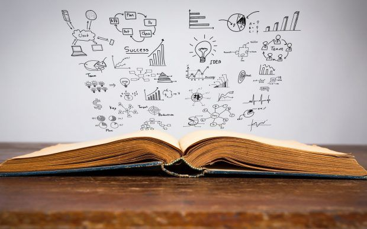

EducationBackground

Completed my School from SSC board then went for the best college for my Junior College FYJC & SYJC which was affiliated with Mumbai University and was under Maharashtra State Board.
Thinking out of the box just tried to attempt JEE 2022 exam and secured good percentile but not sufficient enough to get a dream university.
Attempting the CET 2022 exam was a life changing moment where i secured best mark and opted for my university studies which i'm currently pursuing in TCET.
Will try to go for the Masters in Enginnering through Information Technology and will try to achieve everything which i thought as kid.